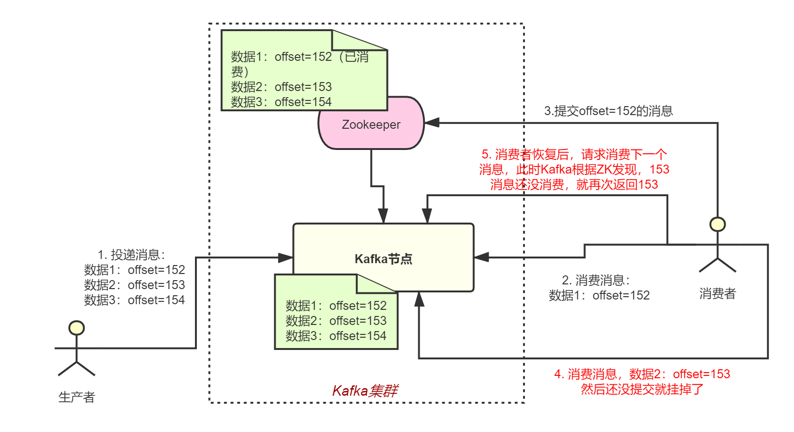

分布式进阶（三）——分布式框架之高性能：消费的幂等性
本章，我们来讲下使用消息队列时另外一个经常需要关注的问题——消费消息时的幂等处理。
所谓幂等，就是当出现消费者对某条消息重复消费的情况时，重复消费的结果与消费一次的结果是相同的，并且多次消费并未对业务系统产生任何负面影响，那么这整个过程就实现可消息幂等。
例如，在支付场景下，消费者消费扣款消息，对一笔订单执行扣款操作，扣款金额为 100 元。如果因网络不稳定等原因导致扣款消息重复投递，消费者重复消费了该扣款消息，但最终的业务结果是只扣款一次，扣费 100 元，且用户的扣款记录中对应的订单只有一条扣款流水，不会多次扣除费用。那么这次扣款操作是符合要求的，整个消费过程实现了消费幂等。
本章针对消息队列讲解消息消费的幂等性，本质其实是讲消费时接口设计的幂等性。
一、重复消费
首先，我们来看下在使用消息队列过程中，什么时候会出现“重复消费”的问题。
1.1 示例
我们以Kafka为例，来看下消费者端可能出现的重复消费问题。
在Kafka中，每个消息都有唯一的offset顺序号，代表了这个消息的序号。当生产者往消息队列里扔消息时，Kafka会按数据进入的顺序给它们分配顺序号。当消费者在消息消息时，会按照这个顺序号依次去消费。
消费者每消费完一条消息，就会提交消息的offset给Kafka，告诉它“我已经消费到这条消息了”，Kafka会通过Zookeeper记录消费者当前已经消费到了哪个offset的消息。
如下图，比如消费者已经消费完offset=153的消息：

如果消费者消费完offfset=153的消息，并本地处理完成后，还没来得及提交offset就自己挂掉了，那么当消费者进程重启恢复后，此时再次去找Kafka消费，Kafka会把offset=153那条消息再次给消费者，消费者就重复消费153这条消息两次。
事实上，消费者消费完一条数据后，不会立即提交offset，而是定时定期提交一次。
二、幂等设计
既然有重复消费问题的存在，那么消费者就必须自己做好消费接口的幂等性设计，接口幂等设计的方式有很多，主要有两种：
数据库方式
基于数据库唯一索引，先根据索引查一下，如果记录都有了，就别插入了，update一下。缓存方式
比如基于Redis实现一套接口的防重框架 。生产者发送每条数据的时候，里面加一个全局唯一的id，消费时先根据这个id去Redis里查一下之前是否消费过？如果没有消费过，就正常处理，然后将这个id写redis；如果消费过了，就别处理了。
2.1 示例
下面我们来看一个示例，更好的理解下接口幂等性。假如有一个支付服务接口，该服务对等的部署在3台机器上。前端上操作的时候，不小心针对同笔订单发起了两次支付请求，然后这俩请求分散在了不同的机器上。这个时候，如果不对支付接口做幂等性设计，就可能导致重复扣款。

所以，保证幂等性主要是三点：
对于每个请求必须有一个唯一的标识，比如订单支付请求，肯定得包含订单id，一个订单id最多支付一次；
每次处理完请求之后，必须有一个状态标识这个请求处理过了，最常见的方案就是在mysql中记录这个标识的状态，比如支付成功后，记录订单的状态为“已支付”；
每次接收请求后，首先根据标识判断之前是否已经处理过了，比如有一个订单已经支付了，就已经有了一条支付流水，那么如果重复发送这个请求，则此时先插入支付流水，orderId已经存在了，唯一键约束生效，会报错插入不进去，那就不会再扣款了。
上面支付的场景只是给大家举个例子，实际运作过程中，必须要结合自己的业务来。接口的幂等性设计，没有一个通用的方法，要结合业务来看，具体问题具体分析。
三、总结
本章，我们从消息队列重复消费的问题开始，引出了接口的幂等性设计，然后给出了一些通用的设计思路。但一般来讲，中大型互联网公司里也很少会去做一个统一的防重幂等框架。
接口的幂等设计，一般都是由各个服务针对自己核心的接口，判断是否要保证幂等性，如果需要的话则根据自己的业务逻辑来实现，而且一般仅仅是少数核心接口需要做幂等性设计保障。
同时，我们要理解的是幂等设计的本质是通过唯一标识，标记同一操作的方式，来消除多次执行的副作用。幂等性设计并没有什么万金油，还是要结合实际具体问题具体分析。